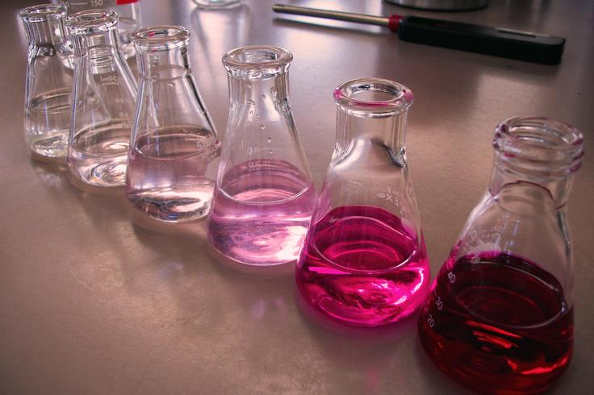
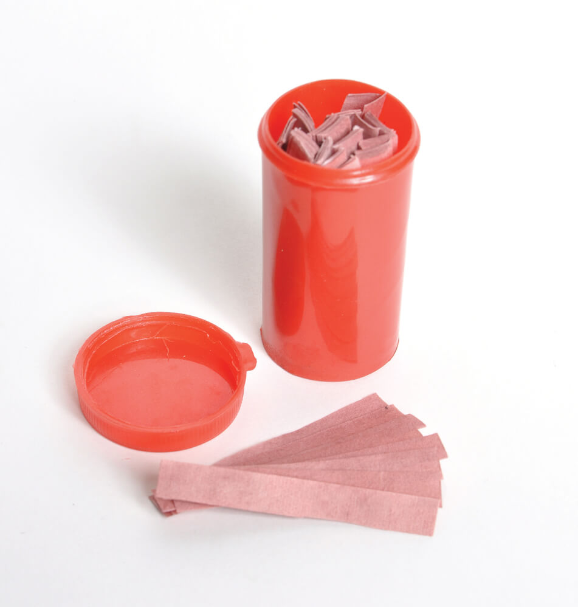

pH/pOH Scale
What is pH or pOH?
Within the field of Chemistry, pH (/piːˈeɪtʃ/) is a scale (with a range of 0 - 14) used to specify how acidic or basic (otherwise known as alkalic) a water-based solution is. Acidic solutions have a lower pH, while basic solutions have a higher pH. At room temperature (25°C or 77°F), pure water is neither acidic nor basic and has a pH of 7, aka. neutral. pOH is just the reverse where acidic > 7 and basic < 7 because it is a measure of hydroxide ion (OH-). To the right are some examples:
A neutral solution has a pH value of 7. (E.g. pH of pure distilled water) This means that the concentration of H+ ions is equal to the concentration of OH- ions.
An acidic solution has a pH value of less than 7. (E.g. sulphuric acid has a pH of 2.75)
- This means that the concentration of H+ ions is more than the concentration of OH- ions.
- The smaller the pH value, the more acidic the solution is.
- A solution with a pH value of 2 is more acidic than a solution of a pH value of 3.
An alkaline solution has a pH value of more than 7. (E.g. pH of aqueous sodium hydroxide)
- This means that the concentration of H+ ions is less than the concentration of OH- ions.
- The bigger the pH value, the more alkaline the solution is.
- A solution with a pH value of 10 is more alkaline than a solution of pH value of 9.
pH Algebraic Formula
Chemists have also constructed formulas for detecting the level of pH and pOH:
pH = -log[H+]
According to this formula, we see that pH can be calculated by finding the negative logarithm of hydrogen ions ([H+]).
pH Formula Example:
[H+] = 3.7 x 10^-6 M
pH = -log(3.7 x 10^-6 M)
ph ≈ - (- 5.75 M)
ph ≈ 5.75 M which means slightly acidic
pOH = -log[OH-]
According to this formula, we see that pOH can be calculated by finding the negative logarithm of hydroxide ions ([OH-]).
pOH Formula Example:
[OH-] = 0.02 M
pOH = -log(0.02 M)
pOh ≈ - (- 1.7 M)
pOh ≈ 1.7 M which means very basic (alkalic)
[H+] = 10^-pH
According to this formula, we see that [H+] (concentration of hydrogen atoms) can be calculated by taking 10 to the power of negative pH.
[H+] Formula Example:
pH = 3.4
[H+] = 10^-3.4
[H+] ≈ 0.000398
[H+] = 3.98 * 10^-4 M
[OH-] = 10^-pOH
According to this formula, we see that [OH-] (concentration of hydroxide ions) can be calculated by taking 10 to the power of negative pOH.
[OH-] Formula Example:
pOH = 8.5
[OH-] = 10^-8.5
[OH-] ≈ 3.162
Different Types of pH Indicators
-
pH Strip: A tiny piece of paper that changes color when dipped in a solution. The color of the pH strip determines how acidic or basic the solution is. The box containing the pH strips has a key that explains which color shows which number.
For example: a battery acid would make the pH strip turn bright red while urine would make it turn light orange. Both are acids, however one is more acidic than another. -
pH Meter: A pH meter is a scientific instrument that measures the hydrogen-ion activity in water-based solutions, indicating its acidity or alkalinity expressed as pH.
For example: companies in the agriculture industry would use a pH meter in their soil to make sure that the range of acidity in the soil is healthy enough for the plants. -
Phenolphthalein: A chemical compound with the formula C20H14O4 and is often written as "HIn" or "phph" in shorthand notation. Phenolphthalein is often used as an indicator of acid-base titrations. For this application, it turns colorless in acidic solutions and pink in basic solutions.

For example: when a scientists need to find the molarity of a solution, they will conduct a titration experiment and use Phenolphthalein to detect when the base and acid cancel each other out. -
Red Litmus Paper: A small piece of red paper that when dipped in a basic solution, will turn blue, otherwise when dipped in an acidic solution, it will stay red.

For example: when dipping red litmus paper inside vinegar, it will stay red because vinegar is an acid. -
Blue Litmus Paper: A small piece of blue paper that when dipped in an acidic solution, will turn red, otherwise when dipped in a basic solution, it will stay blue.
For example: when dipping blue litmus paper inside vinegar, it will turn red because vinegar is an acid.
Why Scientists Measure pH in the Human Body
Your body’s pH balance, also referred to as its acid-base balance, is the level of acids and bases in your blood at which your body functions best. The human body is built to naturally maintain a healthy balance of acidity and alkalinity. The lungs and kidneys play a key role in this process. A normal blood pH level is 7.40 on a scale of 0 to 14, where 0 is the most acidic and 14 is the most basic. This value can vary slightly in either direction. If the lungs or kidneys are malfunctioning, your blood’s pH level can become imbalanced. Disruption in your acid-base balance can lead to medical conditions known as acidosis and alkalosis. Both conditions require treatment from a medical professional, not simply dietary changes.
Buffers
A buffer is a solution that can resist pH change upon the addition of an acidic or basic components. It is able to neutralize small amounts of added acid or base, thus maintaining the pH of the solution relatively stable. This is important for processes and/or reactions which require specific and stable pH ranges.
There are buffer systems in the human body and they are extremely efficient but can take different durations. For example, it only takes seconds for the chemical buffers in the blood to make adjustments to pH. The respiratory tract can adjust the blood pH upward in minutes by exhaling CO2 from the body. The renal system can also adjust blood pH through the excretion of hydrogen ions (H+) and the conservation of bicarbonate, but this process takes hours to days to have an effect.